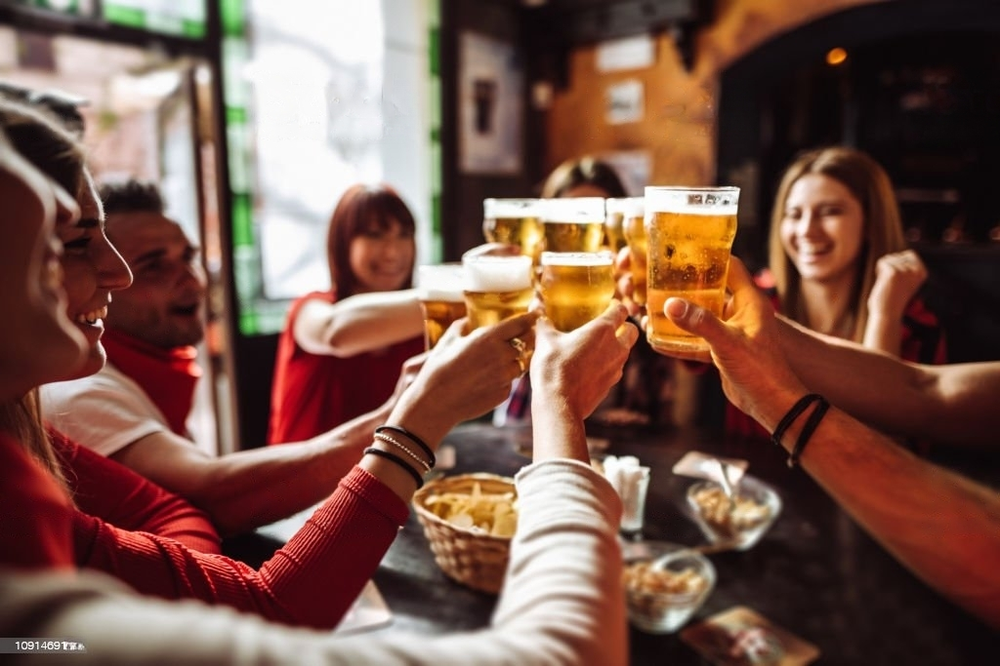
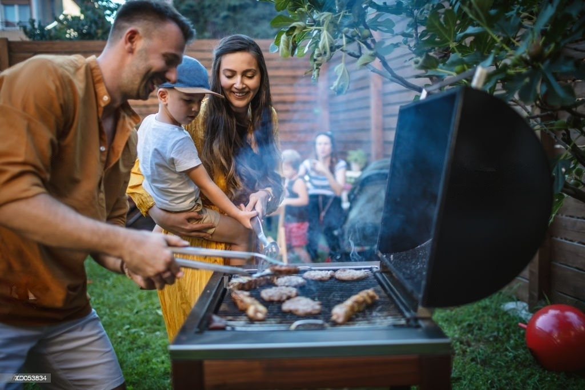
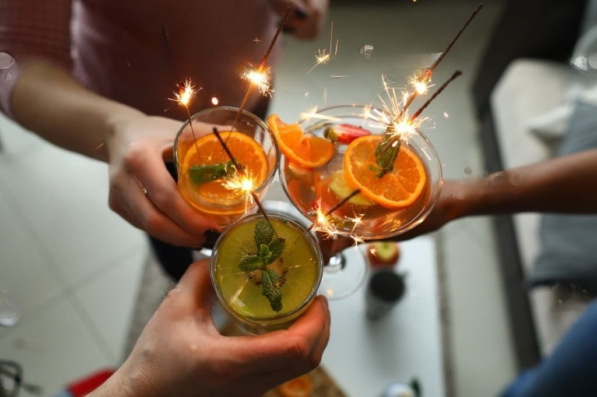

1. Graduation-2020: The COVID-19 Edition!

Graduating from high school, college, or graduate school can be one of life’s most memorable and rewarding milestones. But due to the ongoing Covid-19 pandemic, graduation celebrations have looked differently than those in the past. Thankfully, there are more than a few virtual graduation ideas to help you celebrate your graduate and all that they've accomplished. If not everyone is able to be in the same location to celebrate the occasion, or you simply don't feel like it would be safe to throw a big graduation party, there's no reason why you shouldn't be able to give the grad in your life the party they deserve virtually. All it requires is a little planning and creativity. Whether it’s their (or your!) first degree or their third, graduating represents the culmination and recognition of all the hard work someone has put into studying, taking tests, and studying some more. It’s an important tradition that most of us love to share with our closest friends or family, whether we’re able to celebrate in person or not. From festive graduation Zoom backgrounds and the incorporation of hilarious graduation quotes, to giving unique graduation gifts, there are a bunch of ways to make this year's graduation celebration unique and memorable for everyone.
2. Cheers to Oktoberfest Beers
One of the best times of the year is here - OKTOBERFEST!
As we head into the second weekend of Oktoberfest shenanigans it may be prudent to elevate your
festive experience by pairing your brew with a dish that will perfectly bring out the flavours
in
your glass while enhancing the entire dining experience.
But how do you know which foods go best with which beer? Have no fear friends - we've created a
detailed pairing list so that all you have to do is enjoy.
3. Backyard Barbecue

Introduction:
There's something magical about the warm sun, the scent of charcoal in the air, and the sizzle of
delicious food on the grill. Hosting a backyard barbecue is not just a party—it's an experience that
brings people together to enjoy good food, great company, and memorable moments. Whether you're a
seasoned grill master or a first-time host, this blog will guide you through the steps to throw the
ultimate backyard barbecue bash that will have your guests talking about it for years to come.
Pre-Event Preparation:
Choose the Perfect Date and Time: Consider the weather, your guests' availability, and the time
of day that suits the ambiance you want to create.
Send Invitations: Get creative with invitations – digital, paper, or even handwritten notes to set
the tone for your event.
Plan the Menu: From classic burgers and hot dogs to marinated kebabs and grilled vegetables, curate
a menu that caters to various tastes.
Setting the Scene:
Arrange Ample Seating: Comfortable seating areas are a must. Consider picnic tables, outdoor
lounges, and floor cushions for a cozy vibe.
Decorate with Style: Spruce up your backyard with fairy lights, colorful tablecloths, and themed
decorations to create an inviting atmosphere.
Create a Beverage Station: Set up a self-serve drink station with refreshing beverages, including
lemonade, iced tea, and a selection of cold brews.
The Grill Master's Domain:
Clean and Prep the Grill: Ensure your grill is clean and ready for action. Preheat it before
cooking to get those perfect grill marks.
Food Safety: Keep raw meats and cooked foods separate to prevent cross-contamination. Have a meat
thermometer on hand to ensure safe cooking temperatures.
Experiment with Marinades and Rubs: Elevate your dishes with homemade marinades and spice rubs to
add flavor and tenderness to your grilled creations.
Culinary Delights:
Build Your Burger Bar: Provide a variety of burger patties, buns, cheeses, and toppings for guests
to customize their ultimate burger masterpiece.
Sides and Salads: Offer a diverse range of sides, from classic coleslaw and potato salad to more
creative options like grilled corn salad or quinoa-stuffed bell peppers.
Dessert Galore: Satisfy sweet cravings with grilled fruit skewers, s'mores, or even a build-your-own
sundae station.
Entertainment and Activities:
Music to Set the Mood: Curate a playlist that complements the ambiance you want to create—relaxed,
upbeat, or even a themed playlist.
Lawn Games: Organize friendly competitions with lawn games like cornhole, horseshoes, or giant
Jenga.
Photobooth Fun: Set up a photo booth with props for memorable snapshots and shareable moments.
Gratitude and Farewell:
Thank Your Guests: Show appreciation with a heartfelt thank-you note or a small party favor as your
guests depart.
Collect Feedback: Ask for feedback from your guests to learn what they enjoyed and how you can make
the next barbecue even better.
4. Crafting Cocktail Magic: Unveiling the Art and Science of Mixology

Introduction:
Step into a realm where creativity flows as freely as the spirits, where flavors dance on your
palate, and where every sip is a journey. Welcome to the enchanting world of mixology, where
bartenders are modern-day alchemists, transforming simple ingredients into complex, tantalizing
concoctions. In this blog, we'll lift the curtain on the captivating art and science of mixology,
revealing the secrets behind crafting cocktails that are as mesmerizing to make as they are to
enjoy.
1. The Mixologist's Arsenal:
Tools of the Trade
Behind every masterful mixologist is a toolkit brimming with essential instruments. We'll explore
the shakers, strainers, muddlers, and garnish tweezers that turn a regular drink into a work of art.
Discover how each piece plays a crucial role in the alchemy of mixology, enabling bartenders to
wield their magic with precision and flair.
2. Spirits and Beyond:
Exploring the Elixir of Cocktails
Unravel the mystique of spirits – from the smoky depths of whiskey to the elegant simplicity of
vodka. Dive into the vast world of liquors, understanding how their unique profiles shape the
foundation of cocktails. We'll also take a detour into the realm of bitters and liqueurs, those
mysterious elixirs that add depth and character to every glass.
3. Balancing Act:
The Symphony of Flavors
Creating a cocktail is akin to composing a symphony of flavors. Learn the delicate art of balancing
sweet, sour, bitter, and aromatic notes to craft harmonious libations that captivate the palate.
We'll explore the significance of proper ratios and how mixologists use their intuition to
orchestrate taste sensations.
4. Classics, Resurrected:
Reviving Time-Honored Cocktails
Time-travel through cocktail history as we resurrect classic concoctions and breathe new life into
them. From the elegance of a Manhattan to the timeless allure of a Martini, discover the stories and
secrets behind these iconic beverages while uncovering the art of preserving tradition while
infusing innovation.
5. Liquid Laboratory:
Where Creativity Meets Chemistry
Step into the mixologist's laboratory where the boundaries of creativity are pushed to the brink.
Dive into the world of molecular mixology, where science merges with artistry to create captivating
experiences for the senses. Learn how to create suspended pearls, airy foams, and even cocktails
that change color before your eyes.
6. The Sip of Culture:
Cocktails Around the World
Embark on a globetrotting journey through the rich tapestry of cocktail culture. From the tropical
exuberance of the Caribbean's rum-based drinks to the elegance of French apéritifs, discover how
different regions have crafted their unique liquid legacies.
7. Crafting at Home:
Your Journey into Mixology
Why should the pros have all the fun? Delve into the world of DIY mixology at home. Learn how to
stock your own bar, master a few essential recipes, and even create signature cocktails that bear
your personal stamp. It's time to unleash your inner mixologist and create magic in your own
kitchen.